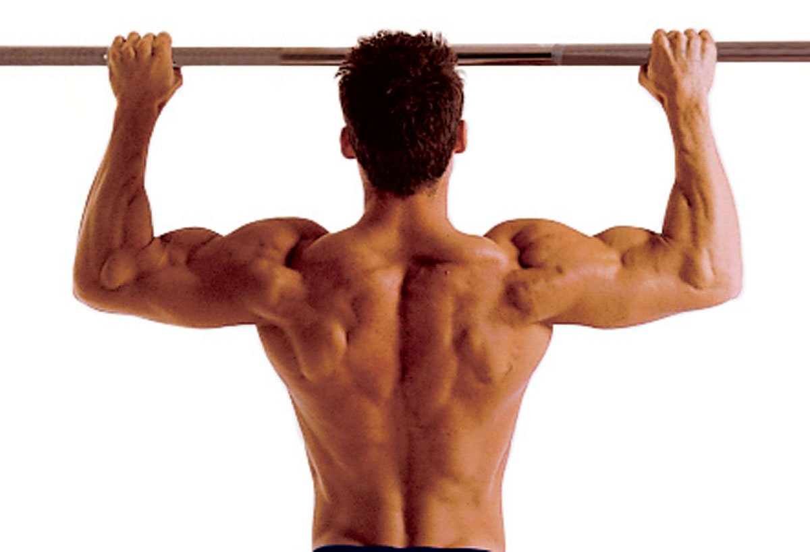

맨손 운동의 시작이자 끝은 턱걸이.
도구를 사용하지 않는 칼리스데닉스 운동법에서도 철봉이나 풀업바를 이용한 턱걸이는 반드시 들어갈 정도이며 웨이트나 어떤 운동을 하든 등근육을 발달시키기 위해서는 반드시 들어가는 필수 동작으로 그 중요성과 효율성은 두말할 필요가 없는 그야말로 최고의 맨몸 운동. 
후술하겠지만 상완이두근과 등근육뿐만 아니라 상체근육 전체를 골고루 단련시키는 운동. 요즈음 여러 맨몸운동 사이트에서 괜히 턱걸이를 강조하는 게 아니다.